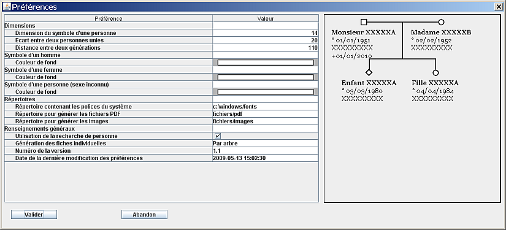
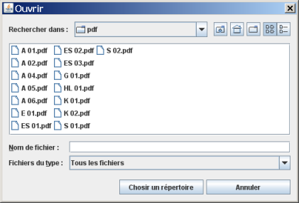
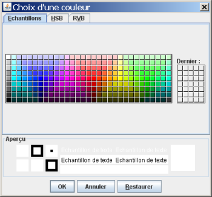
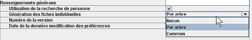

Valeur numérique - Répertoire - Couleur - Liste de choix
Les préférences traitées ici s'appliquent à tous les arbres. Quand vous modifiez une des préférences, il suffit d'ouvrir un arbre pour qu'il tienne compte de ces valeurs.
Pour modifier les préférences, allez dans le menu Fichier puis Préférences. GénéGraphe ouvre une fenêtre :

Cette fenêtre est composée de deux parties. À gauche, un tableau avec les différents paramètres et leur valeur. À droite, vous avez un arbre qui montre l'effet des valeurs que vous modifiez. Cet arbre est mis à jour à chaque fois que vous modifiez une valeur des préférences.
Dimension du symbole d'une personne : cette valeur donne la taille du symbole d'une personne. C'est un carré pour un homme, un cercle pour une femme et un triangle pour une personne dont on ne connaît pas le sexe.
Écart entre les personnes d'une union : quand GénéGraphe positionne deux personnes qui sont unies, il tient compte des noms des personnes et laisse un espace vide entre ces noms. Cette distance est modifiable ici.
Écart entre deux générations : quand GénéGraphe positionne des parents et des enfants, il laisse une distance entre les deux générations. Cette distance est renseignée ici.
Remarque au sujet des deux dernières valeurs : toute modification de ces valeurs sera utilisée lors de l'ajout d'une personne à un arbre. Les modifications n'auront aucun effet sur les arbres déjà dessinés.
Date de la dernière mise à jour des préférences : cette ligne vous indique quand vous avez fait la dernière modification des préférences. Cette date est utilisée pour la gestion des fichiers.
Pour modifier une valeur numérique, il suffit de cliquer sur la valeur pour la modifier. GénéGraphe fait des contrôles sur les valeurs saisies pour qu'elles restent dans une fourchette correcte. Cette fourchette dépend de chaque préférence.
Quand vous cliquez sur un nom de répertoire, une fenêtre s'ouvre pour vous permettre de choisir le répertoire correspondant.


Quand vous cliquez sur une préférence qui est une couleur, une fenêtre vous permet de choisir la couleur que vous voulez utiliser.
En cliquant sur certaines zones, GénéGraphe peut vous ouvrir une liste de choix (ici pour la génération des fiches individuelles). Vous pouvez choisir l'une des options qui vous sont proposées.
